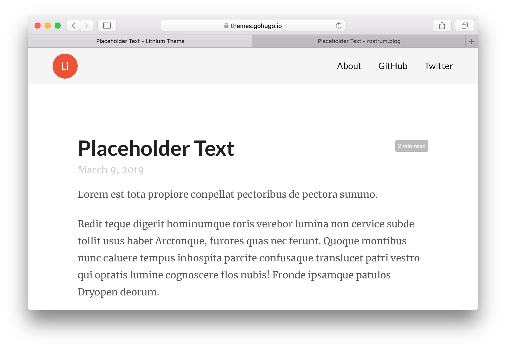

The Lithium template doesn’t display author names, categories and tags by default. I’ve been adding author names manually and the number of posts is large enough now that exploring categories and tags is worthwhile.
I initially found it tricky to add these bits of metadata to each post, so I’m recording it here.
YAML
You provide metadata for your posts in the YAML header (YAML is just some human-readable code often used for configuration). The information can then be extracted and presented on the front-end. The ‘Update Metadata’ option from the {blogdown} RStudio addin is useful for making changes to the YAML.
Here’s the YAML for the post you’re reading currently:
---
title: '{blogdown}: add metadata to Lithium-themed posts'
author: Matt Dray
date: 2019-09-06
categories:
- blog-meta
- code
slug: lithium-metadata
tags:
- blogdown
- hugo
- lithium
- r
- yihui
---
You need to make sure the author, categories and tags elements are completed before they can be extracted and displayed on your posts.
You need to update the files that specify the layout of your site, but where are they? And how do you translate these YAML elements into parameters that are understood in those files?
The file describing the layout of your posts—the one you need to edit—is on this path: layouts/_default/single.html (see the default template).
It’s an HTML file, so has lots of things like <h1 class="article-title">. This is pretty classic HTML that declares a top-level header and a class that can be styled with CSS.
But what we really care about are the things that look like {{ .Title }}. The parameter names embraced in double-curly brackets refer to our YAML elements, but they don’t necessarily have the same name (title in YAML and .Title here, for example).
So <h1 class="article-title">{{ .Title }}</h1> will return the title of the post as an HTML header that will be styled as the article-title class.
Modifications
I hadn’t added the author name in the past because I wasn’t sure what the right parameter was. I found it in section 2.5.1 of the blogdown book: .Params.author.
This meant I could arrange some metadata at the top of my posts in the form Firstname Lastname / DD Mon YYY / X min read with the line {{ .Params.author }} / {{ .Date.Format "02 Jan 2006" }} / {{ .ReadingTime }} min read to get what I wanted.
Displaying categories and tags is trickier. It’s not just about finding the right parameters, but also involves looping through the categories and tags specified in each post’s YAML. Fortunately, the code is provided in section 2.5.2 of the blogdown book, under the bullet ‘Display categories and tags in a post if provided in its YAML’. It looks like this:
<p class="terms">
{{ range $i := (slice "categories" "tags") }}
{{ with ($.Param $i) }}
{{ $i | title }}:
{{ range $k := . }}
<a href='{{ relURL (print "/" $i "/" $k | urlize) }}'>{{$k}}</a>
{{ end }}
{{ end }}
{{ end }}
</p>
I slid this into my single.html file with some trial and error, using a <br> linebreak tag to split the categories and tags onto two separate lines.
Side by side
The default

The default output for a Lithium-themed post is produced with the following single.html file: